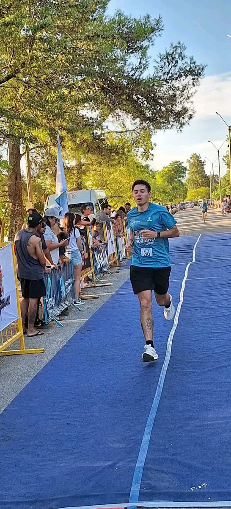
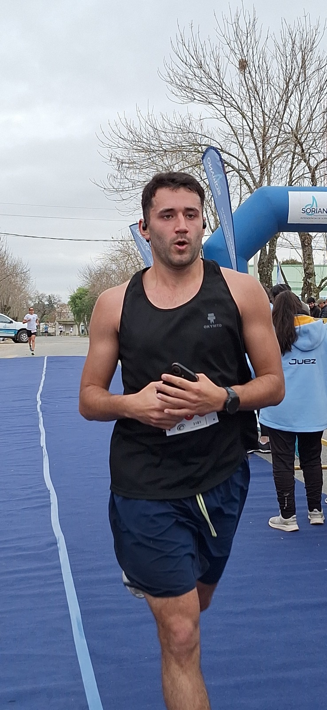
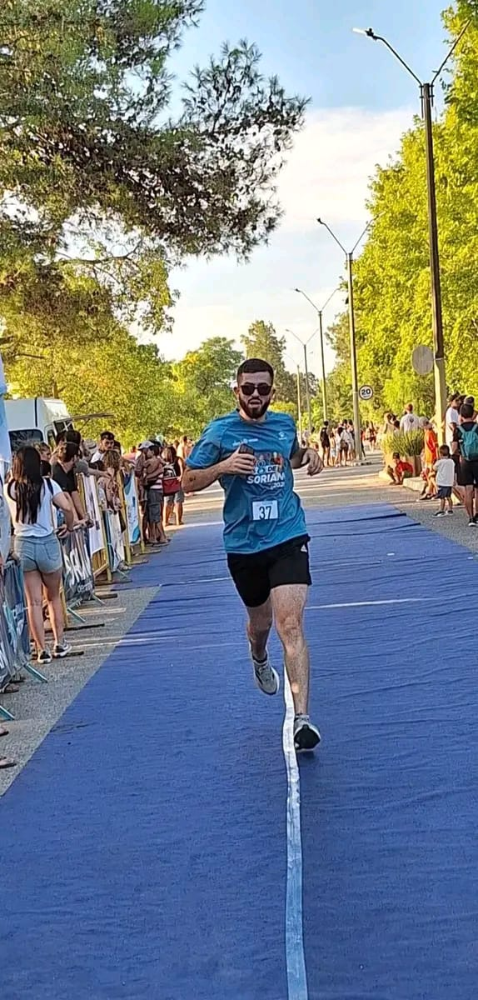

Nuestros Fundadores
MEC Dolores Running nació como una idea entre amigos apasionados por el running,
con el objetivo de crear una comunidad donde cualquier persona pueda encontrar
motivación, compañerismo y un lugar para crecer dentro del deporte.

Martin
Martin es uno de los principales impulsores de MEC Dolores Running.
Su pasión por el deporte y su visión de construir una comunidad abierta
y motivadora fueron fundamentales para dar origen al proyecto.
Constantemente enfocado en el crecimiento del grupo, busca transmitir
disciplina, compañerismo y motivación a cada corredor que se suma
al equipo, demostrando que el running es mucho más que competir:
es compartir experiencias y superarse día a día.

Ernesto
Ernesto aporta experiencia, liderazgo y compromiso dentro de la comunidad.
Con años vinculados al deporte y a las competencias regionales,
se convirtió en una referencia importante para muchos corredores.
Su mentalidad de esfuerzo constante y su capacidad para motivar al grupo
hacen que cada entrenamiento se transforme en una oportunidad para crecer,
mejorar y disfrutar del proceso.

Santiago
Santiago representa la energía y el espíritu humano que identifica
a MEC Dolores Running. Su entusiasmo, cercanía y actitud positiva
ayudan a fortalecer el sentido de comunidad dentro del equipo.
Siempre dispuesto a acompañar y motivar a los demás,
transmite la idea de que cada corredor tiene su propio ritmo
y que todos pueden encontrar su lugar dentro de esta pasión por correr.